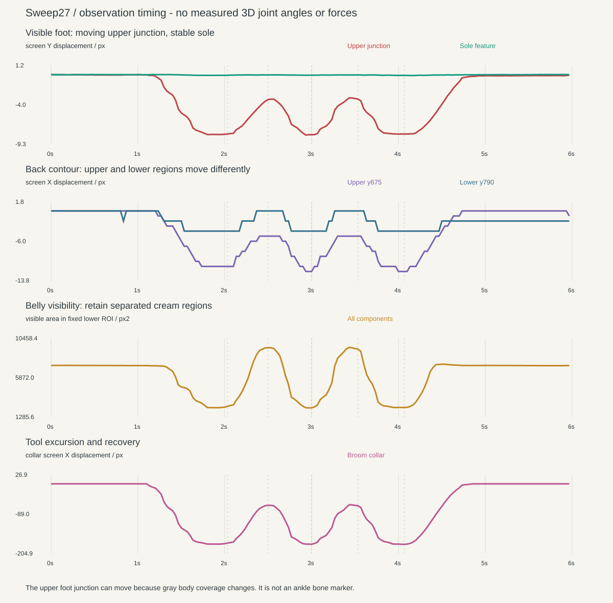

Stable contact. Changing body coverage.
The moving line above the black foot is also where the gray leg covers it. This audit separates that boundary from the exposed paw silhouette, then examines the trunk and recovery across every source frame.
180-frame analysis · no new native rig or measured hidden skeletonSupport evidence
The exposed front endpoint changes0–1px across segmentation thresholds, the rear endpoint2px. A full-clip sole feature moves less than0.2px per axis. The upper junction moves about8px vertically, but it is a covering boundary.
No large heel/toe rocker, lifted step or foot-first impulse is established. Anatomical left/right paw axes are not visible where the black shapes merge.
Trunk and recovery
The upper back contour moves12px across the clip; the lower sample4px. Recovery around2.50/3.53s opens the belly, far-arm and face presentation while retaining working posture.
This supports a coordinated body action. Different motion at different heights can also come from rigid inclination; it does not uniquely prove internal torso twist.
Separate three boundary types
● Green: foot/background · ● Orange: gray body covering foot · ● Magenta: tool occlusion. The red dot tracks their upper junction; it is not an ankle bone.
Timing without inventing a force chain
Preparation starts near1.13s. Work regions occur near1.67–2.10,2.87–3.07 and3.87–4.17s, with more open recovery between them. Threshold crossings describe image changes; they do not measure which joint generates force first.

What the rig should test
| Layer | Supported responsibility | Do not assume |
|---|---|---|
| Contact and paw | Stable sole anchors; original paw identity | Measured yaw, heel/toe roll or alternating load |
| Gray leg / hip / lower trunk | Coherent accommodation and covering boundary above support | That the moving visible junction is an ankle joint |
| Chest, shoulders and head | Coordinated work posture and distinct recovery opening | A uniquely recovered pelvis/chest angle split |
Compare an improved common-body-frame baseline with an articulated lower/chest candidate at equal hand/contact tasks. Add paw motion only if a remaining visual mismatch justifies it. Read the revised seven-pose experiment.
Correction to the earlier belly measurement
Sweep26 kept the largest cream component, which can drop a separated lower belly behind the arm/shaft. This pass retains all cream components inside a fixed lower-body region. The corrected work/recovery areas are2,528/9,356px² at frames61/75. Both occlusion and presentation affect this area; it is never a direct yaw measure.
The earlier claim that independent torso torsion was necessarily required was also too strong. It remains a useful native experiment, not a uniquely measured mechanism.
All180 enlarged foot frames


All180 enlarged torso frames


Independent-view context and its limits
These separately generated front, side and top clips are not synchronized views of the oblique performance. Their snapshots cannot locate the original clip's hidden hips or feet. Top largely occludes both.


Methods, observations and reproducible data
Complete audit · Per-frame observations · Accepted and failed feature tracks · Fixed-foot appearance comparison · Timing diagnostics · File hashes
Original source SHA256:21f8a76609d8bbaa3a100592d7f38ece48f469d622f0130e4532f635bd318fd4. No trained human pose model, hidden-joint interpolation, mechanical native fit, new source generation or physical force estimate.